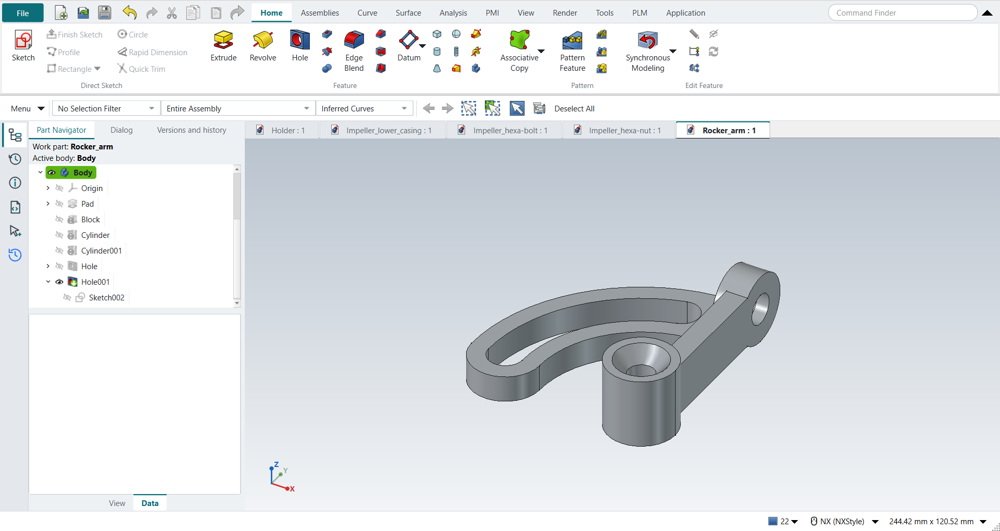

Tutorial AV: Rocker Arm
| Source |
Ming C. Leu, Wenjin Tao, Amir Ghazanfari and Krishna Kolan, NX 12 for Engineering Design (Missouri University of Science and Technology), exercise 4.10.1 (Rocker Arm). |
| You learn |
arcs typed in the fields beside the pointer (centre, radius and start angle, sweep), Extrude, Block and Cylinder with Unite, Hole with a countersink and with a counterbore |
| Sizes |
the drawing’s, in inches, typed in millimetres. |
The book gives the rocker arm only as a drawing; its views are small and rotated, and the replay follows this reading of them:
-
The pivot is at the origin: a boss Ø1.00 × 1.00 along ZC. Its hole is Ø0.38 through, with a 0.75 × 82° countersink.
-
The bar is 0.31 wide (XC), runs from the pivot up to 2.50, and is 0.75 thick (ZC).
-
The arm is 0.38 thick: a band between R1.50 and R2.50 about the pivot, from 90° to 180°, with its end rounded R0.50.
-
A slot 0.50 wide runs on R2.00 from 105° (75° from the horizontal) to 180°, with R0.25 ends.
-
The top boss is Ø1.00 along XC on top of the bar, its centre level with the top, 2.50 up. It runs from 0.12 behind the bar to the bar’s front face. Its hole is Ø0.44 through, with a Ø0.75 × 0.25 counterbore.
Step by step
1. The arm
Create Rocker_arm and click Sketch on the XC-YC plane.
Draw the band with Arc (A):
-
the outer arc: centre (0, 0), R2.50 from 90°, a 90° sweep;
-
the R0.50 end: centre (−2.00, 0), from 180°, a 180° sweep;
-
the inner arc: R1.50.
Close it with a Line (L) on the YC axis from 1.50 to 2.50. Draw the slot the same way: arcs R2.25 and R1.75 from 105° to 180°, and an R0.25 arc at each end.
Type every value in the fields beside the pointer. Where a typed point lands on an end point, the sketcher makes the two coincident, so both loops close. Ctrl+Q, then Extrude the sketch 0.38 along ZC.
2. The bar and the bosses
-
Block 0.31 × 2.50 × 0.75 at the origin, Unite: the bar.
-
Cylinder Ø1.00 × 1.00 along ZC at the origin, Unite: the pivot boss.
-
Cylinder Ø1.00 along XC from (−0.12, 2.50, 0.375), long enough to reach the bar’s front face, Unite: the top boss.
3. The holes
Select the pivot boss’s top face, click Hole and place the point at its centre. Choose Countersink: Ø0.38 through, countersink Ø0.75 × 82°. Select the top boss’s back face, click Hole at its centre and choose Counterbore: Ø0.44 through, counterbore Ø0.75 × 0.25.

Save the part.
The replay
| # | In the book (NX) | In FreeCAD NX-Style | Result | Notes |
|---|---|---|---|---|
AV1 |
Create a new file (Rocker_arm) |
Ctrl+N, Model template |
same |
new document ['Unnamed3'] |
AV2 |
Units in the New dialog (the book picks inches) |
metric part kept; book sizes typed in mm |
differs |
FreeCAD sets units in Preferences, not in the New dialog; NXStyle defaults to millimetres (document: Standard (mm, kg, s, °); 25.4 mm shows as 25.40 mm) |
AV3 |
Save it as Rocker_arm |
file name given once by script (the system file dialog is not driven); a change, then the Ctrl+S key |
same |
Rocker_arm.FCStd rewritten by Ctrl+S: the file holds the change and the part is unmodified afterwards (modified before the key: True); FreeCAD format, not .prt |
AV4 |
Sketch the arm: the band R1.50 to R2.50 from 90° to 180° with its R0.50 end, and the slot on R2.00 from 105° (75°) to 180° |
ribbon 'Home › Direct Sketch > Sketch' on 'XY-plane (Base plane)'; arcs (A) and a line (L), every point typed in the fields beside the pointer |
same |
8 curves in 2 loops, closed True; area 1309.0 mm², the drawing’s 1309.0; how: centre typed, start typed, sweep typed; line 2 typed |
AV5 |
Extrude the arm 0.38 along ZC |
ribbon 'Home › Feature > Extrude', a side picked (click; Curve Rule Inferred Curves), dialog opened True; Boolean 'None', 'lengthEdit' = 9.652 mm; OK clicked |
same |
same solid as the reference: 0 mm³ differ, box within 1.3e-07 mm, 10 faces (10 in the reference) |
AV6 |
Block 0.31 x 2.50 x 0.75 at the pivot: the bar, Unite |
ribbon 'Home › Feature', Type 'Origin and Edge Lengths', XC/YC/ZC 0/0/0 typed, length 0.31, width 2.5, height 0.75 (in) typed in mm, Boolean 'Unite', OK |
same |
same solid as the reference: 0 mm³ differ, box within 3.6e-15 mm, 14 faces (14 in the reference); origin (0.0, 0.0, 0.0); one undo step ['Block']; with Body |
AV7 |
Cylinder Ø1.00 x 1.00 along ZC at the pivot, Unite |
ribbon 'Home › Feature', Type 'Axis, Diameter, and Height', Specify Vector 'ZC', XC/YC/ZC 0/0/0 typed, diameter 1, height 1 (in) typed in mm, Boolean 'Unite', OK |
same |
same solid as the reference: 0 mm³ differ, box within 0 mm, 15 faces (15 in the reference); origin (0.0, 0.0, 0.0); one undo step ['Cylinder']; with Body |
AV8 |
Cylinder Ø1.00 along XC on top of the bar, from 0.12 behind it, Unite |
ribbon 'Home › Feature', Type 'Axis, Diameter, and Height', Specify Vector 'XC', XC/YC/ZC -3.048/63.5/9.525 typed, diameter 1, height 0.43 (in) typed in mm, Boolean 'Unite', OK |
same |
same solid as the reference: 0 mm³ differ, box within 1.4e-14 mm, 16 faces (16 in the reference); origin (-3.048, 63.5, 9.525); one undo step ['Cylinder']; with Body |
AV9 |
Hole on the pivot boss’s top face, at its centre |
Face14 selected + ribbon 'Home › Feature > Hole'; ribbon 'Sketch › Curve > Point', the point typed in the sketch on the face |
same |
1 point(s); at the centre True |
AV10 |
Hole Ø0.38 through, countersink 0.75 x 82° |
'Diameter' = 9.652 mm, Depth 'Through all', 'Countersink', 'HoleCutDiameter' = 19.05, 'HoleCutCountersinkAngle' = 82, MB2 = OK |
same |
same solid as the reference: 0 mm³ differ, box within 3.2e-14 mm, 18 faces (18 in the reference) |
AV11 |
Hole on the top boss’s back face, at its centre |
Face3 selected + ribbon 'Home › Feature > Hole'; ribbon 'Sketch › Curve > Point', the point typed in the sketch on the face |
same |
1 point(s); at the centre True |
AV12 |
Hole Ø0.44 through, counterbore Ø0.75 x 0.25 |
'Diameter' = 11.176 mm, Depth 'Through all', 'Counterbore', 'HoleCutDiameter' = 19.05, 'HoleCutDepth' = 6.35, MB2 = OK |
same |
same solid as the reference: 0 mm³ differ, box within 4.8e-14 mm, 22 faces (22 in the reference) |
AV13 |
The rocker arm |
compared with the drawing’s dimensions built by the Part API |
same |
same solid as the reference: 0 mm³ differ, box within 4.8e-14 mm, 22 faces (22 in the reference) |
AV14 |
Save the part |
file name given once by script (the system file dialog is not driven); a change, then the Ctrl+S key |
same |
Rocker_arm.FCStd rewritten by Ctrl+S: the file holds the change and the part is unmodified afterwards (modified before the key: True); FreeCAD format, not .prt |
| Result | Means |
|---|---|
same |
The book’s NX steps work as written. |
differs |
It works, but the FreeCAD way is different; the notes say how. |
limit |
The book’s way fails in FreeCAD itself; a workaround follows in the next steps. |
missing |
FreeCAD has no such function; a stand-in follows. |
skipped |
Not replayed; the notes give the reason. |
FAILED |
Did not work. |
Each step is compared with FreeCAD’s Part API build of the drawing’s dimensions.
What differs from NX
-
In FreeCAD 1.1.4, values typed in the sketcher’s fields are stored rounded to six decimals, with angles in radians. Its autoconstraints also drop the coincidence a typed point lands on, so the arcs ended up to 3.3e-5 mm apart and the profile stayed open. NX-Style keeps the typed values exact and joins the ends (PRs #37 and #39); the outline now closes to 2e-14 mm.
-
Where two arcs meet tangentially, the join already holds the second arc’s radius, so its typed radius dimension is not kept as a constraint.